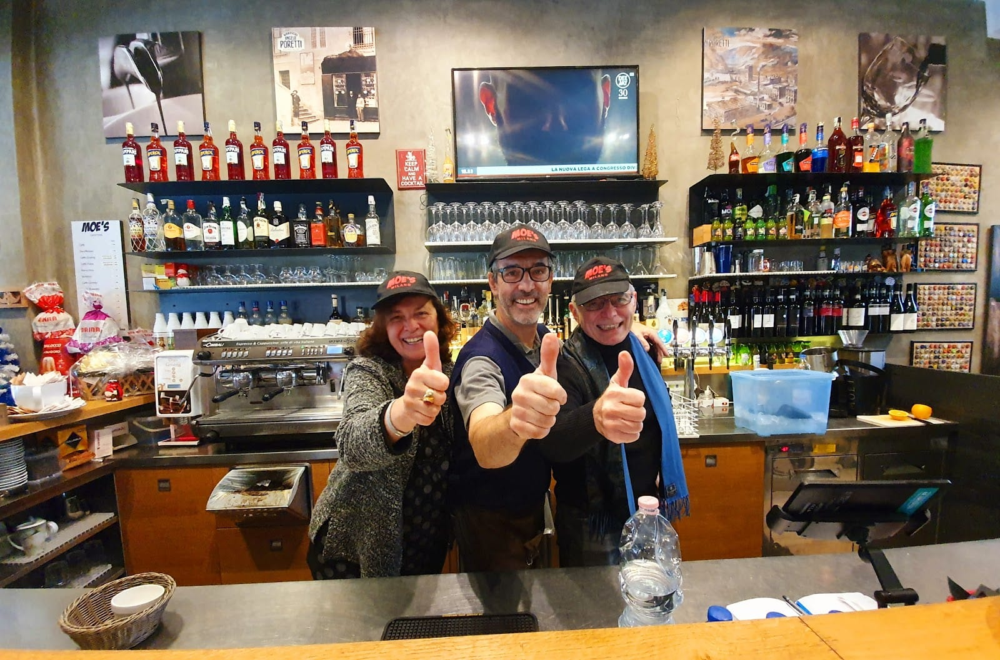
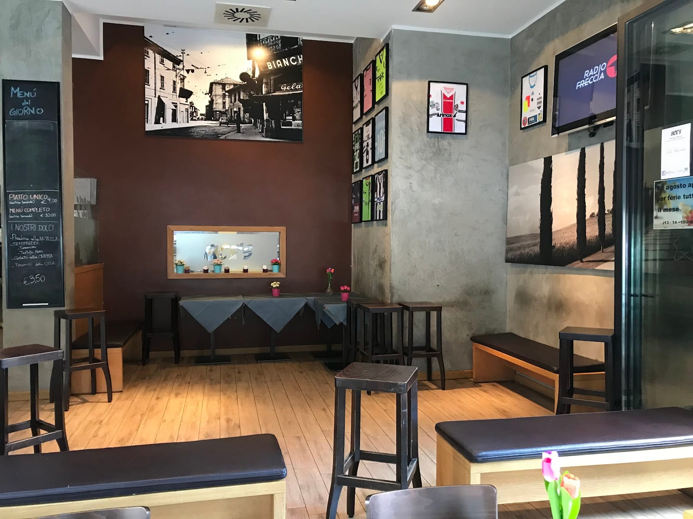
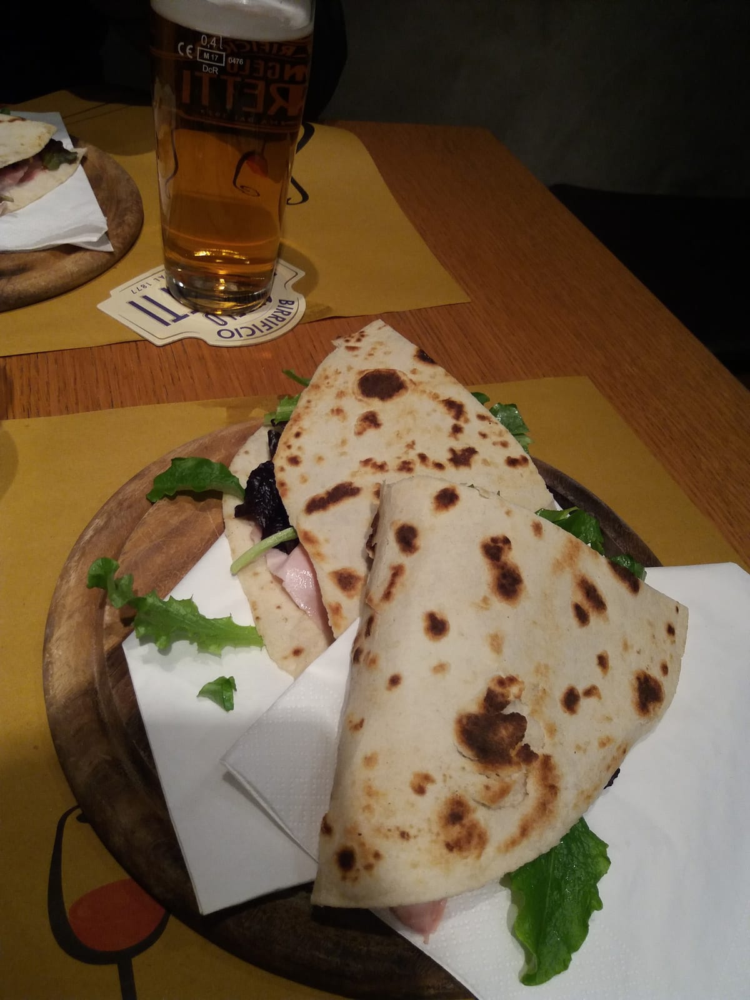
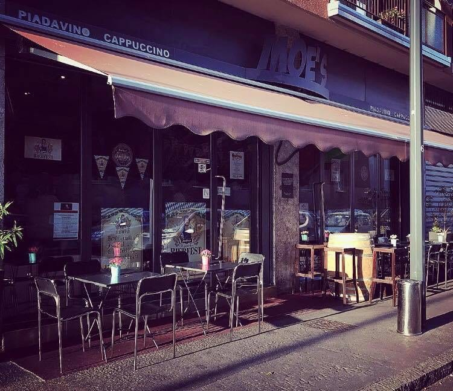

Le sette
Si apre da bar. Caffè, cappuccino, brioche al banco. È la parte di noi che quasi nessuno si aspetta, e infatti nelle recensioni le brioche compaiono più di quanto compaia la parola «cena».
Cappuccino alle sette del mattino, piadine e pizza a mezzogiorno, spina e spritz fino a mezzanotte. Una porta sola, in via Paolo Rotta, aperta diciassette ore.

«Anche se i panini non erano previsti nel menù, hanno avuto la gentilezza di prepararmene uno per accontentarmi, ed è stato semplicemente buonissimo.»
Viviana Pedone — recensione su Google
Non è una cosa che si può mettere nel menù. È il motivo per cui qui la gente torna.
Diciassette ore
Si apre da bar. Caffè, cappuccino, brioche al banco. È la parte di noi che quasi nessuno si aspetta, e infatti nelle recensioni le brioche compaiono più di quanto compaia la parola «cena».
Il menù del giorno è scritto sulla lavagna in sala, non su un'app: piatto unico 9 €, menù completo 10 €, bevande escluse. Cambia, quindi conviene chiedere cosa c'è oggi.
Si riapre e comincia l'aperitivo, che nelle recensioni è la parola più citata di tutte. Lo spritz sta a 3 €, e la selezione di birre artigianali va oltre le spine di casa.
Pizza tonda dal forno, piadine, focacce farcite. La sala è grande e i tavolini stanno anche fuori, sotto la tenda.
Si chiude. Tutti i giorni, domenica compresa — l'unica differenza è che la domenica il mattino non c'è.
La carta
Si parte da sei euro. Qui sotto ce n'è una parte: la lista intera è più lunga, e comprende anche piadine, focacce farcite e i dolci della casa a 3,50 €.
Prezzi pubblicati sulla nostra scheda Google. Dolci della casa 3,50 €: piadina alla Nutella, tiramisù della casa, tartufo nero, gelato alla crema.
Il posto
L'ha scritto un cliente su Google, ed è la definizione migliore che potessimo ricevere. La sala è grande, il pavimento è di legno, alle pareti ci sono le maglie da calcio incorniciate e una fotografia di Niguarda di quando qui c'era la gelateria Bianchi.
Nelle recensioni le parole che tornano più spesso non sono i piatti: sono ambiente, simpatia, cordiale, informale. Messe insieme battono perfino l'aperitivo.


Lo dicono loro
«Anche se i panini non erano previsti nel menù, hanno avuto la gentilezza di prepararmene uno per accontentarmi, ed è stato semplicemente buonissimo. Personale gentilissimo, disponibile e cibo eccellente.»
Viviana Pedone«Bar di periferia, buon punto di riferimento. Personale cortese.»
Mario Licciardi«Moe è una pizzeria buona e sincera, a due passi dalla stazione del tram di Niguarda Centro. Hanno diverse birre artigianali, oltre a quelle 4 luppoli.»
Giovanni Paoletti«Locale accogliente e curato, perfetto per una serata informale in compagnia. L'atmosfera è piacevole e rilassata, arricchita da un'ottima selezione di birre artigianali e cocktail ben preparati.»
Natascia SARNO«Ottima pizza, prezzi onesti, ambiente simpatico»
Massimo SacchiDove siamo
A due passi dalla fermata del tram di Niguarda Centro. Ci si riconosce dalla tenda e dai tavolini sul marciapiede.
| Lunedì | 07:00 – 14:30 | 17:00 – 00:00 |
|---|---|---|
| Martedì | 07:00 – 14:30 | 17:00 – 00:00 |
| Mercoledì | 07:00 – 14:30 | 17:00 – 00:00 |
| Giovedì | 07:00 – 14:30 | 17:00 – 00:00 |
| Venerdì | 07:00 – 14:30 | 17:00 – 00:00 |
| Sabato | 08:00 – 13:00 | 17:00 – 00:00 |
| Domenica | chiuso | 17:00 – 00:00 |

Dal lunedì al venerdì alle 7 del mattino, il sabato alle 8. Poi si chiude alle 14:30 e si riapre alle 17, fino a mezzanotte. La domenica siamo aperti solo la sera, dalle 17.
Sì. Alle sette del mattino il banco è quello di un bar: caffè, cappuccino e brioche. È la parte di noi che quasi nessuno si aspetta.
Sì, ed è scritto sulla lavagna in sala: piatto unico 9 €, menù completo 10 €, bevande escluse. Cambia, quindi conviene chiamare per sapere cosa c'è oggi.
Sì, ci sono tavolini e sgabelli sul marciapiede davanti al locale, sotto la tenda.
La sala è grande e spesso si trova posto anche senza, ma nelle sere piene la prenotazione è consigliata: basta una telefonata.
Sì, oltre alle spine classiche teniamo una selezione di birre artigianali, e dietro al banco c'è anche la parte cocktail: lo spritz è a 3 €.